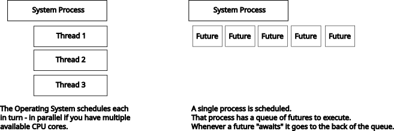

About the Trainer
Herbert has been developing software professionally for more than 20 years. Starting with BASIC, Pascal, and then moving onto C and C++, Herbert has developed custom applications ranging from web-server filters to games. Herbert is the author of Hands-on Rust and Rust Brain Teasers.
| Book | Publisher E-Book | Amazon | |
|---|---|---|---|
| Hands-on Rust |  | PragProg Page | Amazon Page |
| Rust Brain Teasers |  | PragProg Page | Amazon Page |
Resources
I recommend bookmarking the following resources:
Topics We'll Cover
- Threaded vs Async Rust
- Fearless Concurrency
- Rust Memory Management
- Measure Twice, Code Once (Benchmarking and Testing)
- Supercharge Python with PyO3
- Common Rust Performance Pitfalls
- QA
Threads vs Async Rust
There are two major types of concurrency in Rust:
- Threads.
- Asynchronous Code.
The two are linked, but are different things---with different purposes.
Knowing when to use threads and when to use async code makes a huge difference in performance---and makes you a happier programmer, using the solution that fits the problem.

System Threads
A thread is a full operating-system thread. It appears as a schedulable item in the OS, has its own stack (but shares program memory).
Threads are relatively heavy-weight:
- Creating a thread is expensive:
- The OS has to create the schedulable thread.
- The OS has to allocate a stack for the thread.
- Threads context-switch regularly, typically every 16ms.
- Upside: you don't need to write fancy code to use them.
- Downside: they can scale equally with your CPU cores, sometimes even if they are waiting for something.
- You can't create more than a few thousand threads. Linux shows 60k as the limit on my machine.
- Switching between threads is also relatively expensive:
- Threads take it in turns, per-core.
- The current thread is suspended (registers saved, execution pointer saved, etc.)
- The new thread is restored.
- The new thread executes until the OS decides its another items turn.
- Repeat.
Threads are great for sustained CPU-heavy execution. They are rescheduled infrequently, and are designed for crunching.
An Old Adage
I had a problem, so I used 10 threads. Now I have 10 brpolems.
Threading is considered tricky - and rightly so. You're juggling multiple tasks that share the same address space. Rust makes it a lot easier to not suffer race conditions, or forget to synchronize your data.
Async
Async can run in one or more threads. The unit-of-work in an async environment is the "future" - a task that promises to accomplish some work. If you've used NodeJS or async in Python, you're familiar with this.
An async runtime maintains a list of futures that are either active, or waiting on something else. Multitasking is cooperative: a task yields control when it waits for something, or explicitly yields control. Tasks are scheduled by the async runtime.
Async tasks are very lightweight: you can have a lot of them (hundreds of thousands):
- Switching tasks just requires updating the future's status and saving the return point.
- Creating futures is lightweight. They allocate a few bytes for their local storage (depending upon how much you are storing).
- You can have hundreds of thousands, millions even of futures.
Async is great for heavy input-output operations, and for servers that spend a lot of time waiting for things (disks, databases, network, etc). Async is not good for CPU-heavy tasks, because if you don't explicitly yield control---other tasks won't get to go.
Runtimes
Rust chose to be agnostic about the async runtime. You can pick from several - ranging from smol (tiny, embedded friendly) all the way up to tokio (one thread per core, shared task lists, work-stealing to minimize pausing, the Enterprise standard). There are specialized ones like glommio that integrate Linux's io_uring for blazing input-output performance.
Why Not Both?
You can mix and match threads and async! This is especially helpful if your workload is mostly CPU-heavy, but you'd like an async interface to the rest of your service stack.
There are two common patterns here:
Async and Threaded Separately
- Run a single thread with an async engine.
- That engine sends/receives messages (instructions).
- The engine sends instructions into channels to tell the threaded architecture what to do.
This is a great fit for a mostly threaded system that needs to maintain high-performance communication with other systems.
All Tokio, All the Time
- Run Tokio in "multi thread" flavour.
- Tokio makes one thread per CPU core, with a task list for each thread.
- Task lists can "work steal" from one another - reducing the risk of bogging down.
- Tasks that are going to take a while use
spawn_blockingto run inside Tokio's thread pool.
This is a great fit for a service architecture focused on performance, that sometimes needs to perform heavy calculation in threads.
Threading with Rayon
Let's start by looking at Rayon. Rayon is sometimes called "easy mode" by Rust programmers. That's not a bad thing: sometimes you want easy---especially if its blazing fast, and resource efficient at the same time!
Rayon is a crate that is widely used in the Rust ecosystem (and directly led to some core Rust features). Rayon:
- Builds a thread pool (one thread per available CPU core by default) on start-up. You pay for thread creation once.
- Implements parallel iterators to let you take normal Rust code and easily run it in parallel---if your problem is readily parallelizable.
- Provides lots of helpers such as parallel sorting.
- Implements a scoped-threading task system, similar to the standard library---but remaining inside the global thread pool so you don't oversubscribe your tasks.
Rayon isn't the answer to everything: it's bad at making a long-running thread that you want to keep working while your program does other things. But its a great place to start, and to get a feel for how Rust can make threading feel easy.
Fibonacci Numbers
Fibonacci numbers form a sequence where each number is the sum of the two preceding ones, starting from 0 and 1.
Fibonacci numbers are also a good performance test, because generating them the "obvious" recursive way can be pretty slow. When you're testing performance with threads, it's a good idea to have a workload that will keep your CPU warm!
The code for this is in
code/threads/fib_sync
Here's a single-threaded Fibonacci program:
fn fibonacci(n: u64) -> u64 { match n { 0 => 1, 1 => 1, _ => fibonacci(n - 1) + fibonacci(n - 2), } } fn main() { // Shorthand: put 0 through 39 into a vector (list). let targets: Vec<u64> = (0 .. 40).collect(); // Start the timer let now = std::time::Instant::now(); let results: Vec<u64> = targets // Iterate through each target .iter() // Map transforms each entry into the results of the function call .map(|n| fibonacci(*n)) // Collect gathers the results into a collection .collect(); // Collect how much time has passed let elapsed = now.elapsed(); // Print the result println!("Completed in {} seconds.", elapsed.as_secs_f32()); println!("{results:?}"); }
Calculating the first 40 Fibonacci numbers in debug mode took 0.93 seconds on my laptop. In optimized mode (cargo run --release) it's a much more reasonable 0.31 seconds.
The online Rust Playground averages about 2.39 seconds for this task.
Not terrible---but we can do better!
Parallel Fibonacci
Rayon adds "parallel iterators" to make this easy to paralleize. We can parallelize this by adding a dependency to rayon:
cargo add rayon
And replacing one line of code:
The code for this is in
code/threads/fib_rayon
// Import the "prelude" (commonly used functions) from Rayon use rayon::prelude::*; fn fibonacci(n: u64) -> u64 { match n { 0 => 1, 1 => 1, _ => fibonacci(n - 1) + fibonacci(n - 2), } } fn main() { let targets: Vec<u64> = (0 .. 40).collect(); let now = std::time::Instant::now(); let results: Vec<u64> = targets .par_iter() // <--- Use `par_iter` instead of `iter` .map(|n| fibonacci(*n)) .collect(); let elapsed = now.elapsed(); println!("Completed in {}", elapsed.as_secs_f32()); println!("{results:?}"); }
Rayon creates a 1-thread per CPU thread-pool by default, and divides tasks automatically (with work-stealing so no thread goes idle). My debug performance improved to 0.46 seconds, and my release performance is up to 0.122 seconds.
Note that you'll see limited improvement in the Rust Playground---it doesn't offer many CPUs!
So with two lines of code, we've parallelized the whole calculation. The performance increase is pretty good---not the best you could achieve, but it's hard to beat using two lines of code!
Rayon is a great choice when you have a readily parallized algorithm. It can often do it for you!
Most of the commonly used iterator functions are available.
Parallel Sorting
Rayon also includes parallel versions of the regular Rust sort operations:
use rayon::prelude::*; fn main() { const CAPACITY: usize = 1_000_000; let mut random = Vec::with_capacity(CAPACITY); for _ in 0..CAPACITY { random.push(rand::random::<u64>()); } let now = std::time::Instant::now(); let mut v = random.to_vec(); v.sort(); let elapsed = now.elapsed(); println!("Regular Sort of {CAPACITY} Numbers Completed in {}", elapsed.as_secs_f32()); let now = std::time::Instant::now(); let mut v = random.to_vec(); v.par_sort(); let elapsed = now.elapsed(); println!("Parallel Sort of {CAPACITY} Numbers Completed in {}", elapsed.as_secs_f32()); }
On my work computer, I get the following results:
Regular Sort of 1000000 Numbers Completed in 0.055435345
Parallel Sort of 1000000 Numbers Completed in 0.0088947
Note that the parallel sort can be slower than a regular sort for small data-sets!
What Else can it Do?
Rayon also includes mechanisms to:
Join
join lets you spawn two threaded tasks and receive the results when they both finish. Not to be confused with the regular join command---the naming is unfortunate.
fn a() -> u32 { let mut n = 0; for _ in 0..1_000_000 { n += 1; } n } fn b() -> u32 { let mut n = 0; for _ in 0..1_000_000 { n += 1; } n } fn main() { let (a,b) = rayon::join(a, b); println!("a: {a}, b: {b}"); }
Thread Scopes
You can also use Rayon to spawn your own tasks. This is just like Rust's regular thread scoping, but spawns tasks inside the Rayon tasks-list.
fn do_something(n: i32) { for i in 0..n*10 { println!("{n} - do_something: {}", i); } } fn main() { rayon::scope(|scope| { for i in 0..10 { scope.spawn(move |_| { do_something(i); }); } }); }
It is guaranteed that all tasks will complete before the scope terminates.
Scoped Threads in Rust
There are two major methods for creating threads in Rust. Let's start with scoped threads. Similar to Rayon, threads spawned inside a scope are guaranteed to finish when the scope ends - so borrowing values from outside of the scope is easier, and there's no need to remember to wait for your threads.
You don't need any dependencies.
Here's a very basic example using two scoped threads:
use std::thread::scope; fn main() { scope(|scope| { for i in 0..10 { scope.spawn(move || { println!("Thread number {}", i); }); } }); }
Note the mysterious
move, which isn't really moving anything. We'll talk about that in a bit.
This program spawns 10 threads, and they each print a greeting. The order in which the greetings appear is up to your operating system.
Scoped threads are great when you want to "fan out" to child threads, and be sure they are all done when you resume.
Regular Threads in Rust
The building block for threads is std::thread. Here's the "hello world" of regular threads:
fn main() { let handle1 = std::thread::spawn(|| { println!("Thread number 1"); }); let handle2 = std::thread::spawn(|| { println!("Thread number 2"); }); handle1.join().unwrap(); handle2.join().unwrap(); }
Threads keep running until either you join them, or your program stops. If you take the join calls away, there's no guaranty that your program will do anything at all!
Retrieving Data from Threads
Join handles also let you retrieve results from threads:
fn double_it(n: i32) -> i32 { n * 2 } fn main() { let handle = std::thread::spawn(|| { double_it(5) }); let result = handle.join().unwrap(); println!("Result: {}", result); }
Sending Data Between Threads with Channels
Channels are Go's secret weapon, so Rust implemented them too.
fn receiver(rx: std::sync::mpsc::Receiver<i32>) { while let Ok(received) = rx.recv() { println!("Got: {}", received); // Without this, the program will run forever if received == 10 { break; } } } fn main() { let (tx, rx) = std::sync::mpsc::channel(); let handle = std::thread::spawn(move || { receiver(rx) }); for i in 1..=10 { tx.send(i).unwrap(); } handle.join().unwrap(); }
The great part is that you can use any type. So you can send enumerations to issue commands, even send function pointers (that's part of Rayon's magic trick!).
Working with Async
Async in Rust requires a runtime (it provides task scheduling, IO interaction and scheduling). So let's make a project with tokio as the runtime:
cargo add tokio -F full # The feature flag "full" enables all the features
Now we'll make a simple "Hello, World" in async Rust:
async fn say_hello() { println!("Hello, world!"); } #[tokio::main] async fn main() { say_hello().await; }
Things to note:
- We've decorated
main()with#[tokio::main]. This macro wraps the actual invocation of Tokio for you. It's really creating a Tokio runtime and calling a function calledblock_on. - The
asynckeyword on functions. This is syntax sugar that changes your function to return aFuturetype. - So
say_hello()doesn't do anything other than create aFuturevariable. - The
Futuredoesn't run until youawaitit.
.await does several things:
- It adds your future to the list of tasks awaiting execution.
- It pauses your current function, noting the return location.
- The task queue continues to the next task.
If you don't
await(or otherwise execute) aFuture---nothing happens.
Single or Multi-Threaded
Async can work on a single thread---it just maintains the task queue. Here's the same program in single-threaded mode:
async fn say_hello() { println!("Hello, world!"); } #[tokio::main(flavor = "current_thread")] async fn main() { say_hello().await; }
Staying in single-thread mode, let's use join! to spawn a few tasks at once and wait for them:
async fn looper(n: i32) { for i in 0..5 { println!("[{n}]: looper: {}", i); } } #[tokio::main(flavor = "current_thread")] async fn main() { tokio::join!(looper(1), looper(2), looper(3)); }
This results in serialized execution: tasks 1 through 3 run in order. This illustrates the biggest problem with async code: blocking. If your task keeps running, it doesn't allow other tasks to execute. Now let's explicitly tell teach task to yield control:
async fn looper(n: i32) { for i in 0..5 { println!("[{n}]: looper: {}", i); tokio::task::yield_now().await; } } #[tokio::main(flavor = "current_thread")] async fn main() { tokio::join!(looper(1), looper(2), looper(3)); }
Now the tasks run in-turn. You are explicitly telling each task to give up control of the CPU and let the next task run. You aren't paying for threads (in scheduling time or overhead), but you are cooperatively multitasking.
You can also use spawn_blocking if you need to run a task in a thread. Tokio maintains a thread pool, so you have some of the advantages of Rayon (you pay for thread creation up front):
async fn looper(n: i32) { tokio::task::spawn_blocking(move || { for i in 0..10 { println!("[{n}]: looper: {}", i); } }).await.unwrap(); } #[tokio::main()] async fn main() { tokio::join!(looper(1), looper(2), looper(3)); }
Note that we had to remove
current_threadto allow multiple threads to run. Otherwise Tokio assumes you really mean it when you say you want to use one thread!
So Why Would You Do This?
Async really shines for input/output. Let's take a look at this program:
use tokio::{net::TcpListener, spawn, io::{AsyncReadExt, AsyncWriteExt}}; async fn tcp_server() -> anyhow::Result<()> { println!("Listening on 127.0.0.1:3001"); let listener = TcpListener::bind("127.0.0.1:3001").await?; loop { let (socket, _address) = listener.accept().await?; spawn(server_receive(socket)); } } async fn server_receive(mut socket: tokio::net::TcpStream) -> anyhow::Result<()> { let mut buffer = [0; 1024]; let n = socket.read(&mut buffer).await?; println!("Server received: {n} bytes"); socket.write_all(&buffer[0..n]).await?; Ok(()) } async fn tcp_client(n: i32) -> anyhow::Result<()> { let mut socket = tokio::net::TcpStream::connect("127.0.0.1:3001").await?; let message = format!("Hello, world! from client {n}"); socket.write_all(message.as_bytes()).await?; let mut buffer = [0; 1024]; let n = socket.read(&mut buffer).await?; println!("Echoed message: {}", std::str::from_utf8(&buffer[0..n])?); Ok(()) } #[tokio::main(flavor = "current_thread")] async fn main() { // Start the TCP server spawn(tcp_server()); tokio::time::sleep(std::time::Duration::from_secs(1)).await; let mut set = tokio::task::JoinSet::new(); for i in 0 .. 1000 { set.spawn(tcp_client(i)); } tokio::time::sleep(std::time::Duration::from_secs(1)).await; }
Walking through it:
- We're sticking to single-threaded mode. No threads here.
- We spawn the
tcp_server- In turn, it listens on 127.0.0.1:3001 (TCP).
- When a connection arrives, it spawns a new task -
server_receive.- In turn,
server_receiveprints how many bytes it received. - It then replies with the same message.
- In turn,
tcp_clientconnects to the server, and sends it a message. It prints the reply.- We use
JoinSet, a Tokio helper for spawning lots of tasks at once.
So in 41 lines of code, we've made a TCP server and a TCP client. It doesn't do much - but it is very fast.
Now let's build it with cargo build --release. We'll measure it with:
/usr/bin/time -v ../../target/release/async_tcp # -l on Macs
The maximum resident set size was 4,640 bytes! And it peaked at 3% CPU usage. So very little code, and very lean and mean network code. Plus, it all ran in a single thread.
Switching off the single-thread mode ups CPU usage to 20% - as it could use many cores, but remained very small (4640 bytes resident set).
Conclusion: Rust Async offers extremely lean, mean, high-performance IO.
Threads and Async
Use Rayon threads when you want:
- Simple code
- Easy parallelization of tasks
- Your problem is embarrassingly parallel and fits into the Rayon iterator model
Use threads when you want:
- Maximum CPU throughput
- You can keep the number of threads manageable
- 1 per CPU core is ideal
- Maximum is around 60,000---operating system dependent.
Use async when you want:
- Maximum input/output speed
- Accept that the network, database, file I/O will cause latency
- Convert that latency into throughput by letting other tasks run while you wait
And in an ideal world: mix and match as needed, with either spawn_blocking or channels to give commands to threads. You can even use rayon inside async functions.
Safe Concurrency
Rust makes a really big deal about claiming fearless concurrency. Fearless comes in two flavours:
- It's not hard to use threads or async code. (We just did some!)
- Rust tries really hard to make it difficult to shoot yourself in the foot.
Before we dive into how this works, let's start with a couple of fundamental Rust concepts.
Move by Default
One of the first things that surprises everyone who comes to Rust is "move by default". Let's take a look!
You'd normally expect a simple program like this to Just Work(TM):
fn print(s: String) { println!("{s}"); } fn main() { let my_string = String::from("Hello"); print(my_string); println!("{my_string}"); }
It doesn't even compile! What's up with that?
Rust is "move by default" : When you pass an undecorated variable to a function, the variable moves into the function and no longer exists in the parent scope!
You could get around this by moving it right back out again:
fn print(s: String) -> String { println!("{s}"); s } fn main() { let my_string = String::from("Hello"); let my_string = print(my_string); println!("{my_string}"); }
This compiles, but would make for a pretty tedious programming experience (not to denegrate some functional languages in which is the norm!).
What Rust is really doing is keeping track of "ownership". main declared my_string, so it belongs to main. Moving it into print means that print now owns it. It's up to print to destroy it (no manual destruction needed - we'll talk about that later).
But what if you want print to just use your string? You can lend it to other functions, who in turn borrow it (hence the name "borrow checker"):
fn print(s: &String) { println!("{s}"); } fn main() { let my_string = String::from("Hello"); print(&my_string); println!("{my_string}"); }
Notice that we've had to add & to lend, and & to indicate that we know we're borrowing. Rust is strict about this: you can't change a function signature, forget to update the caller and have odd things happen!
So ownership now remains with main the whole time.
You can even let functions change/mutate your loaned variable:
fn print(s: &mut String) { s.push_str(" World"); println!("{s}"); } fn main() { let mut my_string = String::from("Hello"); print(&mut my_string); println!("{my_string}"); }
Notice again Rust is being a little pedantic:
- We had to add
mutto the variable itself to allow it to be changed. - We had to indicate both that we're lending and borrowing mutably.
The need for explicit borrowing like this is a hangover from C++, where you can change the function and not remember to change the caller---and suddenly copy gigabytes of memory for no good reason.
Ownership
So where are we going with moving and borrowing? Rust is all about understanding ownership. A variable is owned somewhere, and when it falls out of scope (is no longer referenced) it is dropped. We'll talk about this in memory management, later this afternoon.
There's a reason behind the ownership system:
- The Rust compiler always knows where a variable actually is.
- The borrow checker strictluy enforces a compile-time rule that:
- EITHER
- You can have as many immutable (read-only) references as you want.
- OR (exclusive)
- You can have one mutable writer to a variable.
- EITHER
You cannot have more than one mutable writer to a variable, or a mutable writer while a reader exists. It won't compile.
That may sound like a strange restriction, but it allows Rust to offer Fearless Concurrency. Let's work through what that means.
Fearful Concurrency
Hands-up if threads have ever given you a headache. Preferably not including today!
Concurrency has a reputation for being hard. Rust makes it easier, and eliminates many of the most common bugs.
Let's start with some Python:
#!/usr/bin/python3
import threading
counter = 0
def one():
return 1
def adder():
global counter
for _ in range(1000000):
counter = counter + one()
threads = []
for i in range(10):
thread = threading.Thread(target=adder)
thread.start()
threads.append(thread)
for thread in threads:
thread.join()
print(counter)
Note that Python 3.9+ has a little bit of race-condition protection in, but we fooled it by adding the one() function. Prior to 3.9, you didn't need that. What does this program return?
python3 racey.py
3638217
python3 racey.py
4307520
And so on --- the program rarely gives the same answer twice! This is called a race condition. It happens because adding to a variable is a multi-step process:
- Retrieve the current value.
- Add one to it.
- Store the current value.
Any other thread may interrupt while this is happening, causing you to miss part of the task.
This is a big problem. Uber found several thousand race conditions in their systems! It's also one of the primary deterrents to writing concurrent code. It's just too easy to mess up, with no warning or errors.
You can write the same bug in Rust, if you try really hard:
use std::thread::scope; fn main() { static mut COUNTER: usize = 0; scope(|scope| { for _ in 0..10 { scope.spawn(|| { for _ in 0..1_000_000 { unsafe { COUNTER += 1; } } }); } }); unsafe { println!("Counter: {COUNTER}"); } }
PLEASE don't do this
Rust will let you have this bug, too! But you need unsafe everywhere to do it. If you try without unsafe, it simply won't compile.
Let's try this without unsafe tags:
use std::thread::scope; fn main() { static mut COUNTER: usize = 0; scope(|scope| { for _ in 0..10 { scope.spawn(|| { for _ in 0..1_000_000 { COUNTER += 1; } }); } }); println!("Counter: {COUNTER}"); }
It won't compile with the error message "use of a mutable static requires an unsafe tag". Ok, so we've used a mutable static. Can we use a regular mutable reference?
use std::thread::scope; fn main() { let mut counter: usize = 0; scope(|scope| { for _ in 0..10 { scope.spawn(|| { for _ in 0..1_000_000 { counter += 1; } }); } }); println!("Counter: {counter}"); }
This won't compile either, with the error message that you can't mutably borrow counter more than once. That's the key here: the borrow checker prevents race conditions.
Fearless Atomics
Rust wouldn't be very useful if it implemented threads really well and then didn't let you change anything with them. You could structure it so that each thread runs entirely indepenently and returns a value (in fact, if that fits your problem - you should). But sometimes you can't avoid the need to share.
But I just told you that you can't share borrows?
In this case, we're using an integer---and CPUs have primitives called "atomics". An atomic is a number designed to be safely shared. Instead of the usual 3-phase update (fetch, increment, store) it guarantees that other cores won't interrupt the process - so you don't end up with corrupt data.
Here's the same counter in Rust with atomics:
use std::sync::atomic::Ordering::Relaxed; use std::sync::atomic::AtomicU32; fn main() { let counter = AtomicU32::new(0); std::thread::scope(|scope| { let t1 = scope.spawn(|| { for _ in 0 .. 1000000 { counter.fetch_add(1, Relaxed); } }); let t2 = scope.spawn(|| { for _ in 0 .. 1000000 { counter.fetch_add(1, Relaxed); } }); }); println!("{}", counter.load(Relaxed)); }
This will give the same answer every time. The syntax for atomics is a little more explicit, and there are only so many operations available---but they are really fast (CPU accelerated).
So why does this work, and a regular integer doesn't? Is it because Atomics are super-special (they are, but that's not the answer).
There are two traits (properties/interfaces) that are applied for you when applicable to all types in Rust---your own and built-in types:
- A type with
Sendcan be sent between threads. Most types areSend. - A type with
Synccan be read safely across threads, immutably.
Ok, so Sync means it can be read across threads. But we're not just reading? The second half of this is interior mutability. A type that has interior mutability is immutable from outside---the type itself can be Sync and borrowed as much as you want.
Internally, it protects its contents from concurrent writes. Atomics do this with CPU intrinsics. Mutexes---the next slide---do this for anything.
So you are immutably borrowing the atomic---you just have a pointer to where it is. Then the atomic itself ensures that access obeys Rust's very strict rules---so it can safely declare itself Sync.
Fearless Mutexes
You have have run into Mutexes in Python:
This is available in
code/mutex.py
#!/usr/bin/python3
from threading import Thread, Lock
counter = 0
mutex = Lock()
def one():
return 1
def adder():
global counter
for _ in range(1000000):
with mutex:
counter = counter + one()
threads = []
for i in range(10):
thread = Thread(target=adder)
thread.start()
threads.append(thread)
for thread in threads:
thread.join()
print(counter)
We declare "mutex" to be a Lock() and then the with mutex locks it. This prevents your race condition.
Spot The Difference
Now let's look at code/mutex_oops.py. Can you spot the difference?
#!/usr/bin/python3
from threading import Thread, Lock
counter = 0
mutex = Lock()
def one():
return 1
def adder():
global counter
for _ in range(1000000):
counter = counter + one()
threads = []
for i in range(10):
thread = Thread(target=adder)
thread.start()
threads.append(thread)
for thread in threads:
thread.join()
print(counter)
In case you missed it,
with mutex:is gone from the second example.
The problem with mutexes in most languages is that you have to remember to use them. It's really easy to forget one lock, and boom - you have a race condition.
Let's look at a Rust mutex setup:
use std::sync::{Arc, Mutex}; fn main() { let counter = Arc::new(Mutex::new(0)); std::thread::scope(|scope| { let my_counter = counter.clone(); let t1 = scope.spawn(move || { for _ in 0 .. 1000000 { let mut lock = my_counter.lock().unwrap(); *lock += 1; } }); let my_counter = counter.clone(); let t2 = scope.spawn(move || { for _ in 0 .. 1000000 { let mut lock = my_counter.lock().unwrap(); *lock += 1; } }); let _ = t1.join(); let _ = t2.join(); // let _ means "ignore" - we're ignoring the result type }); let lock = counter.lock().unwrap(); println!("{}", *lock); }
We'll talk about
Arclater. For now, think of it as an easy way to share data across threads.
The basics should look very familiar: we create a mutex and lock it (and unwrap the result, because Rust mutexes can tell you if a thread crashed while it held the mutex). But notice the significant difference:
#![allow(unused)] fn main() { let counter = Arc::new(Mutex::new(0)); }
We've wrapped the mutex around the data. You cannot forget to lock the mutex, because locking is the only way to get to the data!
Safe Concurrency Wrap
So Rust concurrency is fearless because it's relatively easy to use---and it won't let you forget your locks and make a data race. Data races won't compile, so your precious data remains intact.
It's always better to fail to compile than give a wrong answer! It's even better to crash than give a wrong answer. You can diagnose those; you can spend a really long time figuring out why a number isn't quite right... hopefully you noticed!
Rust Memory Management
Rust is not a garbage collected language---but it can feel like one in normal usage. You very rarely have to resort to actual direct memory management; but you can if you need to!
Anyone here familiar with C and C++. Does this give you nightmares?
#include <stdio.h>
#include <stdlib.h>
struct MyStruct {
int number;
};
int main() {
MyStruct * heap_struct = new MyStruct();
// Forget this and you have a memory leak!
delete heap_struct;
struct MyStruct * c_struct = (struct MyStruct *)malloc(sizeof(struct MyStruct));
// Same again
free(c_struct);
return 0;
}
When you call new or free, you are allocating memory on the heap (as opposed to the stack). If you forget to clean up after yourself, you have a memory leak. In this case, it's harmless---the program is going away anyway. In a big program, leaking from time to time can gradually increase your memory usage until the whole program is killed by the operating system.
Python, Java, Go, C# all solve this by being garbage collected languages. You allocate, the system notices that you aren't using a variable anymore---and it is destroyed for you. That's wonderful---but it can be a problem when you need very high performance. From time to time, the garbage collector will run one of various algorithms to find the unused space and clean it up. You have limited control over when it does this. So you can often have a system with really predictable latency most of the time, and the occasional sudden performance burp.
Rust doesn't do that.
The Incredible Power of Drop
C++ invented a pattern called RAII - "Resource Acquisition is Initialization". You can tell it's a C++ term, because it neither accurately describes what it does, nor rolls off the tongue!
RAII is built upon destructors. You have those in Python, too:
# Python program to illustrate destructor
class Employee:
# Initializing
def __init__(self):
print('Employee created.')
# Deleting (Calling destructor)
def __del__(self):
print('Destructor called, Employee deleted.')
obj = Employee()
del obj
The problem here is that the destructor fires when you call del---but if you let the garbage collector do the destruction, it's going to fire at some point in the future when a) you're done with the object, and b) Python notices that you're done with the object. So destructors don't get a lot of use in Python.
In Rust, they are called Drop---and they are everywhere.
Let's build a toy example:
struct MyType { label: String } impl Drop for MyType { fn drop(&mut self) { println!("Dropping {}", self.label); } } fn main() { let var = MyType { label: String::from("MyType") }; }
If you run this, it prints Dropping MyType. The destructor runs because the main function is ending, and the variable it owns is no longer in scope.
How about if you move it?
struct MyType { label: String } impl Drop for MyType { fn drop(&mut self) { println!("Dropping {}", self.label); } } fn move_here(var: MyType) { println!("Ending move_here"); } fn main() { println!("Starting"); let var = MyType { label: String::from("MyType") }; move_here(var); println!("Ending"); }
This prints:
Starting
Ending move_here
Dropping MyType
Ending
When you move the variable, it's owning scope changes to the move_here function - so when the variable leaves the function, it is dropped. Immediately, with no delay.
How about borrowing?
struct MyType { label: String } impl Drop for MyType { fn drop(&mut self) { println!("Dropping {}", self.label); } } fn borrow_here(var: &MyType) { println!("Ending move_here"); } fn main() { println!("Starting"); let var = MyType { label: String::from("MyType") }; borrow_here(&var); println!("Ending"); }
Now you get:
Starting
Ending move_here
Ending
Dropping MyType
Ownership is never transferred into the borrow_here function---so the variable is destroyed at the end of main().
What about if I want to kill it now?
struct MyType { label: String } impl Drop for MyType { fn drop(&mut self) { println!("Dropping {}", self.label); } } fn main() { let var = MyType { label: String::from("MyType") }; std::mem::drop(var); println!("Program end"); }
drop lets you delete it immediately. If you try and use var after you drop it, the program won't compile. No "use after free" bugs here!
Transitive Drop
Drop is deep and consistent. If you make a vector of types, when the vector goes away---so does every type. (Vectors are even on the heap!)
struct MyType { label: String } impl Drop for MyType { fn drop(&mut self) { println!("Dropping {}", self.label); } } fn main() { let mut vec = Vec::new(); for i in 0 .. 10 { let var = MyType { label: format!("MyType {i}") }; vec.push(var); } }
Drop is automatically present, so
MyTypewould still be dropped if you didn't implementDrop---but implementing it lets us see that it's working!
Rust Benchmarking
Supercharge Pyton with PyO3
Fibonacci Python
Remember we were playing with Fibonacci numbers in Rust? Let's try a Python equivalent:
#/usr/bin/python3
import time
def recur_fibo(n):
if n <= 1:
return n
else:
return(recur_fibo(n-1) + recur_fibo(n-2))
results = []
t0 = time.time()
for i in range(40):
results.append(recur_fibo(i))
t1 = time.time()
print(results)
print("Time: ", t1-t0)
On my workstation, it finished in 11.176 seconds.